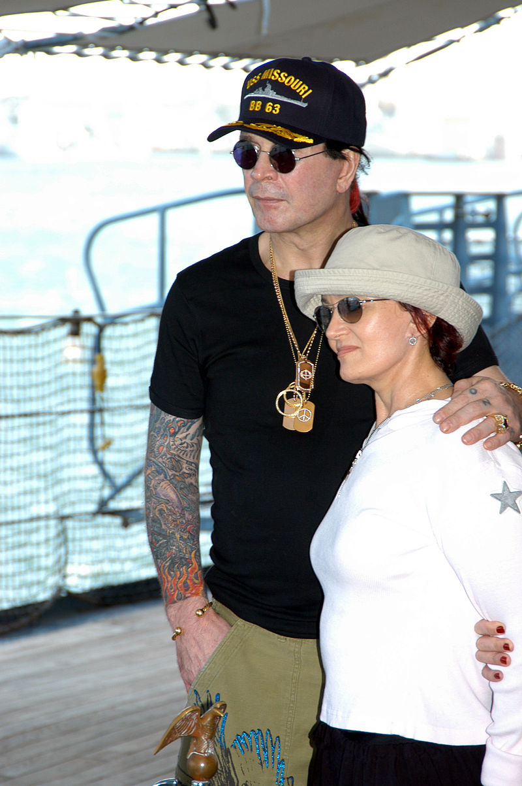
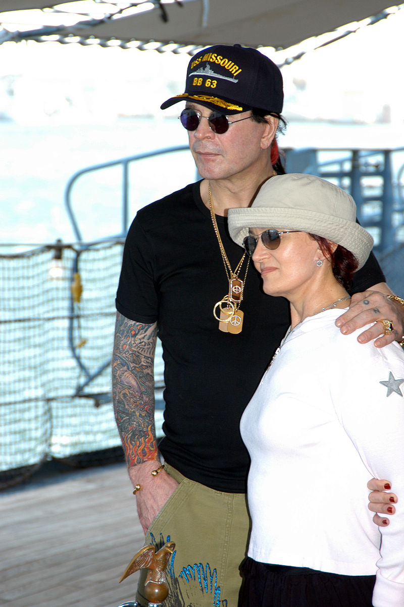

Personal Life

In 1971, Osbourne met his first wife Thelma (née Riley) at a nightclub in Birmingham called the Rum Runner, where she worked.[9] They were married in 1971 and children Jessica and Louis were soon born while Osbourne adopted Thelma's son Elliot. Osbourne later referred to his first marriage as "a terrible mistake";[9] his drug and alcohol abuse, coupled with his frequent absences while touring with Black Sabbath, took their toll on his family life, with his children later lamenting the fact that he was not a good father. In the 2011 documentary film God Bless Ozzy Osbourne, produced by son Jack Osbourne, he admitted that he could not even remember when Louis and Jessica were born.[120]
Osbourne married Sharon Arden on 4 July 1982 and had three children with her. He later said that he deliberately married Arden on the US Independence Day so that he would never forget his anniversary. Their children are Aimee (born 2 September 1983), Kelly (born 27 October 1984), and Jack (born 8 November 1985). They also took in family friend Robert Marcato after his mother died, but never legally adopted him. Osbourne has numerous grandchildren.[121]
Osbourne wrote a song for his daughter Aimee, which appeared as a B-side on the album Ozzmosis. He divides his time between the family's Buckinghamshire mansion and Malibu, California.[122] It was reported by The New York Times in 1992 that Osbourne was a member of the Church of England and prayed before each show.[123] In 2002, Osbourne and wife Sharon were invited to the White House Correspondents' Association dinner by Fox News Channel correspondent Greta Van Susteren for that year's event. President Bush noted Osbourne's presence by joking, "The thing about Ozzy is, he's made a lot of big hit recordings – 'Party with the Animals', 'Sabbath Bloody Sabbath', 'Facing Hell', 'Black Skies' and 'Bloodbath in Paradise'. Ozzy, Mom loves your stuff."[124]
 Ozzy and his wife are one of the UK's richest couples, according to the Sunday Times Rich List. They ranked at number 458 in 2005, with an estimated £100 million earned from recording, touring, and TV shows. Osbourne has over 15 tattoos, the most famous of which are the letters O-Z-Z-Y across the knuckles of his left hand. This was his first tattoo, created by himself as a teenager with a sewing needle and pencil lead.
Osbourne suffered minor burns after a small house fire in January 2013. On his 65th birthday on 3 December 2013, he asked fans to celebrate his birthday by donating to the Royal Marsden cancer charity in London.
Osbourne married Sharon Arden on 4 July 1982 and had three children with her. He later said that he deliberately married Arden on the US Independence Day so that he would never forget his anniversary. Their children are Aimee (born 2 September 1983), Kelly (born 27 October 1984), and Jack (born 8 November 1985). They also took in family friend Robert Marcato after his mother died, but never legally adopted him. Osbourne has numerous grandchildren.[121]
Osbourne wrote a song for his daughter Aimee, which appeared as a B-side on the album Ozzmosis. He divides his time between the family's Buckinghamshire mansion and Malibu, California.[122] It was reported by The New York Times in 1992 that Osbourne was a member of the Church of England and prayed before each show.[123] In 2002, Osbourne and wife Sharon were invited to the White House Correspondents' Association dinner by Fox News Channel correspondent Greta Van Susteren for that year's event. President Bush noted Osbourne's presence by joking, "The thing about Ozzy is, he's made a lot of big hit recordings – 'Party with the Animals', 'Sabbath Bloody Sabbath', 'Facing Hell', 'Black Skies' and 'Bloodbath in Paradise'. Ozzy, Mom loves your stuff."[124]
 Ozzy and his wife are one of the UK's richest couples, according to the Sunday Times Rich List. They ranked at number 458 in 2005, with an estimated £100 million earned from recording, touring, and TV shows. Osbourne has over 15 tattoos, the most famous of which are the letters O-Z-Z-Y across the knuckles of his left hand. This was his first tattoo, created by himself as a teenager with a sewing needle and pencil lead.
Osbourne suffered minor burns after a small house fire in January 2013. On his 65th birthday on 3 December 2013, he asked fans to celebrate his birthday by donating to the Royal Marsden cancer charity in London.